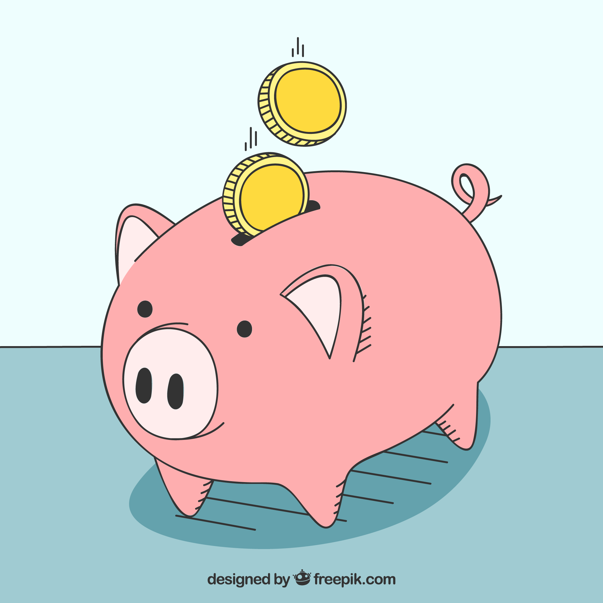

2024-07-25
"행복편지"
- 작자 박시호.

어느 날, 나이에 비해 조숙한 여덟 살짜리 소녀 테스는 부모님이 나누는 대화를 몰래 엿들었습니다.
남동생 앤드류에 대한 이야기였습니다. 테스가 알고 있는 것은 앤드류가 많이 아프지만 치료할 돈이 없다는 것이었습니다.
아빠는 이제 집세 낼 돈도 없기 때문에 곧 빈민촌 아파트로 이사를 가야만 한다고 했습니다. 지금 동생의 병을 치료하기 위해서는
큰 병원에서 수술을 해야 하지만, 누구도 그렇게 큰돈을 빌려주지 않았습니다.
"이제 우리 앤드류는 기적이 아니면 살릴 수 없소." 아빠는 울고 있는 엄마에게 이렇게 말했습니다.
테스는 자기 방으로 돌아와 벽장 속에 숨겨둔 유리 저금통을 꺼내 모든 동전을 쏟아 놓고 몇번이나 세어보았습니다.
"1달러 11센트"
테스는 동전을 다시 넣고 뚜껑을 닫은 다음 저금통을 들고 조용히 뒷문으로 빠져나와 어디론가 달려갔습니다.
그 건물은 토머스 씨가 운영하는 약국이었습니다.
테스가 약국으로 들어갔으나 토머스 아저씨는 바빠서 테스를 알아보지 못했습니다. 테스는 발자국 소리도 내보고 기침소리도 내보았지만 아저씨는 전혀
눈치 채지 못했습니다. 마침내 테스는 저금통에서 동전을 하나 꺼내 유리 카운터에 짤깍짤깍 두드렸습니다. 그제야 비로소 아저씨가 테스를 돌아보았습니다.
"어떻게 왔니?" 어저씨는 귀찮은 듯 물었습니다. 그리고 대답도 듣지 않고 말했습니다.
"난 지금 시카고에서 오신 귀한 손님과 상담 중이란다."
테스도 더 이상 참을 수 없어 다급한 소리로 말했습니다.
"제 동생이 지금 너무 아파요. 그리고 제 동생은 기적이 아니면 살릴 수 없대요. 그래서 지금 기적을 사러 왔어요."
"뭐라고?" 아저씨가 어리둥절해서 물었습니다.
테스는 계속해서 말했습니다.
"제 동생 이름 앤드류예요. 머릿속에 이상한 것이 자라고 있대요. 아빠가 그러시는데 기적만이 제 동생을 살릴 수 있대요. 그래서 기적을 사려고 뛰어 왔어요.
기적을 주세요."
토머스 아저씨는 약간 누그러진 목소리로 대답했습니다.
그 때 시카고에서 온 손님이 가까이 다가왔습니다. 그는 몸을 굽혀 작은 소녀에게 물었습니다.
"남동생에게 어떤 기적이 필요하니?"
"모르겠어요." 테스는 기대에 찬 눈빛을 반짝이면서 말을 이었습니다.
"엄마가 그러시는데, 제 동생이 너무 아파 수술을 해야 한대요. 그런데 아빠가 돈이 없는 것 같아서 제가 모은 돈을 쓰려고 해요."
"그래, 얼마나 가졌왔니?" 손님이 물었습니다.
"1달러 11센트요." 테스는 아주 작은 목소리로 대답했습니다.
"지금은 이 돈이 전부에요." 그렇지만 부족하면 더 모아올 수 있어요."
"그것 참 대단한 우연이구나." 손님이 미소를 지으면 말했습니다.
"네 동생의 기적을 사려면 정확히 1달러 11센트가 필요하단다."
손님은 테스가 가져온 저금통을 받아들고 한 손으로 테스의 작은 손을 잡고 말했습니다.
"너희 집으로 가자꾸나. 네 동생과 부모님을 만나고 싶구나. 내가 가지고 있는 기적이 네가 사려고 한 기적과 같은지 한 번 볼까."
이 손님은 바로 세계적인 신경전문의 칼튼 암스르롱 박사였습니다. 그는 앤드류가 수술을 받을 수 있도록 도와주었고, 수술을 받은 앤드류는 금방 회복되었습니다.
기쁨에 찬 엄마가 테스에게 속삭였습니다.
"앤드류의 수술은 바로 테스 네가 일으킨 기적이란다. 이 기적의 값이 얼마인지 아니?"
테스는 혼자 미소 지었습니다. 그녀는 그 기적의 값이 얼마인지 누구보다 잘 알고 있었습니다.